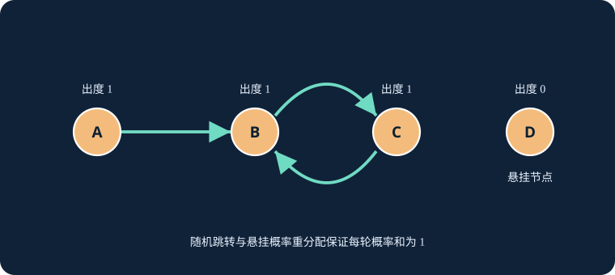

DIRECTED LINK ANALYSIS / RANDOM SURFER
一个网页的重要性，不只取决于有多少入链。
链接数相同，网页重要性也相同吗？
假设一个网页获得十条来自无人访问的小站的链接，另一个只获得两条来自重要资料页的链接。简单计数入链会忽略来源质量。PageRank 的思路是：一个页面的重要性来自指向它的页面，而这些来源的重要性也由整个有向图共同决定。

把浏览行为建成马尔可夫过程
随机浏览者在一个网页上，通常沿该页出链等概率移动；但有一定概率直接跳转到某个网页。令 α 为沿链接前进的概率，v 为跳转分布（各分量非负、总和为 1），P 为处理过悬挂节点后的行随机转移矩阵。以列向量记排名：
这里 rᵗ 各分量是第 t 步的概率，Pᵀ 把来源节点的概率分配给目标节点；常见 α=0.85 只是可调参数，不是数学上唯一正确的数值。若使用均匀跳转分布，则 v 的每个分量为 1/n。
没有出链的网页如何处理？
D 节点的出度为 0。如果直接丢弃其沿链接前进的 α 比例，全部节点的概率和会逐步变小。因此常见实现把悬挂节点的这部分概率重新分配到跳转分布 v。悬挂节点并不等于没有入链，也不等于得分为 0。
- 初始化。四个页面各分配 1/4 的概率。
- 沿链接转移。A 把链路部分送到 B；B 送到 C；C 送到 B。
- 处理 D。D 的链路部分按均匀分布补回四个节点。
- 随机跳转。每个节点都得到 (1−α)/4 的基础跳转概率。
- 迭代。重复，直到排名变化足够小；记录迭代上限与容差。
观察概率质量如何移动
四个网页的确定性迭代
第 0 步：均匀初始化；所有节点的概率和为 1。
这个演示不是浏览器伪造的论文实验数据：所有数值来自固定图、α=0.85、均匀跳转、明确的悬挂节点规则和实际矩阵更新。你可以在 Python 中复算同一个过程。
PageRank 与 HITS 不是一回事
PageRank 为每个页面求一个稳态概率分数。Kleinberg 的 HITS 则在给定链接子图中交替计算 authority（被好 hub 指向）与 hub（指向好 authority）两类分数：每次利用邻接矩阵与其转置反复更新。HITS 的 hub 高分不等于它自己一定是权威信息页。两种算法在子图构造、归一化和使用场景上都不同。
同一个四节点示例，使用官方实现复算
运行环境：Python 3.11+、NetworkX 3.3+。明确设定了有向边、孤立出度节点和迭代容差。
import networkx as nx
graph = nx.DiGraph()
graph.add_nodes_from("ABCD")
graph.add_edges_from([("A", "B"), ("B", "C"), ("C", "B")])
rank = nx.pagerank(graph, alpha=0.85, max_iter=1000, tol=1e-12)
assert abs(sum(rank.values()) - 1.0) < 1e-10
assert rank["B"] > rank["C"] > rank["A"]
assert abs(rank["A"] - rank["D"]) < 1e-10
print({node: round(rank[node], 6) for node in "ABCD"})链接操纵、爬虫采样、主题相关性和时间新鲜度都无法仅靠一个 PageRank 分数解决；算法更不是网页内容真实性的证明。
原始资料与技术参考
- Page, Brin, Motwani & Winograd, The PageRank Citation Ranking: Bringing Order to the Web，斯坦福技术报告。
- Kleinberg (1999), Authoritative Sources in a Hyperlinked Environment，JACM 46(5)。
- NetworkX pagerank，包括 personalization、dangling 与收敛处理。
下一章不再排名单个节点，而是寻找整张图里连接较为紧密的节点群体。